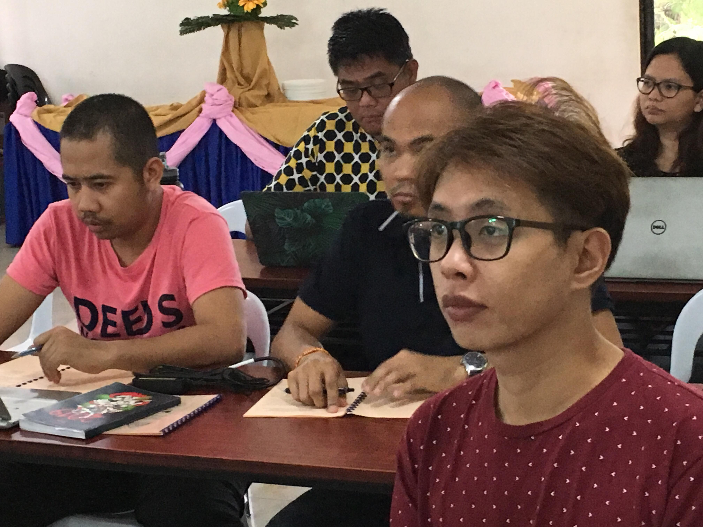

Redefining the Role of Filipino Global South Scholars in International Research and Publication
Read Call for Papers CALL FOR PAPERS
This issue of AGSJ accepts papers in line with the theme: “Redefining the Role of Filipino Global South Scholars in International Research and Publication”. This maiden issue invites contributions that shall bring about Global South knowledge production de-territorializing Global Northern academic themes as a primary goal of AGSJ toward the decolonization, de-stratification and democratization of social knowledge production.
Further, it looks into the position of Filipino Global South Scholars as relegated in the margins given the backdrop of Global North publication as standard for academic works. Hence, this issue calls for contributions that shall problematize and theorize on Social Sciences and Humanities from the perspective of Global Southern Scholars. It hopes to publish works and initiatives from local as well as international Global South Social Sciences and Humanities practitioners. AGSJ is open to the participation of all Social Sciences and Humanities academics, practitioners and graduate students. This AGSJ issue welcomes discourses and conversations that interrogate on enabling and/or constraining mechanisms in the role of Filipino and/or Global South Scholars in knowledge production.
Contributions may fall under varying sub-themes as the follows:
- Women and gender relations
- Power and resistance: The Filipino/Global South experience
- Transnational Social Science and Humanities perspectives viewed from the Global South
- Citizenship and Identities: The Filipino/Global South Experience
- Filipino Art: Research, theory and practice
- Humanism and Visual Art: Research, Theory and Practice
- Language, Politics and Culture: A Global South Perspective
- Humanities and Social Science: Methodological and Epistemological Divide
- Humanistic theory and relationship to pedagogies of teaching and learning
Other themes not enlisted above but deal with the problematics and discourse on Global South scholarship are also welcome.
Deadline for submissions is on January 15, 2020.